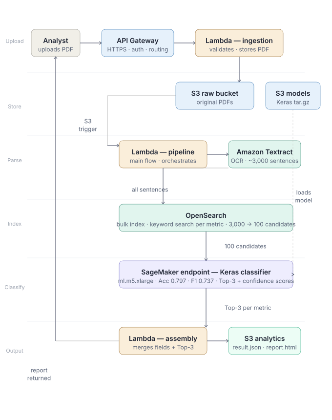

End-to-end AWS pipeline that ingests annual and quarterly PDF reports from financial institutions and produces structured analysis reports with supporting sentence evidence. A PDF goes in — a report.html with cited supporting sentences and confidence scores comes out, fully automated.
Stage 1 uses OpenSearch keyword retrieval to narrow approximately 3,000 extracted sentences down to 100 candidates per financial metric. Stage 2 sends those 100 candidates to a Keras text classifier deployed on SageMaker, which identifies the top 3 supporting sentences with confidence scores. The pipeline runs all metrics in parallel via AWS Step Functions.

Separates concerns and enables per-metric retry without restarting the full pipeline. The Map state with MaxConcurrency set to 5 runs all financial metrics in parallel while preventing Lambda throttling at the account level.
All sentences extracted from a PDF are indexed at parse time. Stage 1 keyword search at query time is then instant — no need to re-scan the raw text. This also allows the same index to serve multiple metrics in parallel without re-reading S3.
Keras inference on 100 sentences per metric is fast enough on CPU — no GPU required. This avoids GPU instance costs which would be significant for a batch pipeline that runs only when a report is uploaded.
Raw, processed, and models buckets are kept separate to apply different lifecycle policies, encryption settings, and access controls to each. Raw PDFs and model files have different retention requirements than intermediate parsed results and final reports.
The structured JSON output enables programmatic downstream access and re-rendering. The HTML report gives analysts direct browser access without any tooling. Both are written to the S3 analytics bucket from the assembly Lambda.
| Decision | Reason |
|---|---|
| Step Functions + Map state (MaxConcurrency=5) | Parallel per-metric processing; per-metric retry without full pipeline restart |
| OpenSearch for all sentence indexing | Instant keyword search at query time; single index serves all metrics |
| Keras endpoint on ml.m5.xlarge CPU | Sufficient for 100-sentence batches; avoids GPU cost |
| Three S3 buckets (raw / processed / models) | Separate lifecycle policies, encryption, and access controls per bucket type |
| result.json → report.html | JSON for programmatic access; HTML for direct analyst browser access |
| Terraform for infrastructure; SDK for SageMaker | Infrastructure changes infrequently; model updates independently — separate deployment paths |